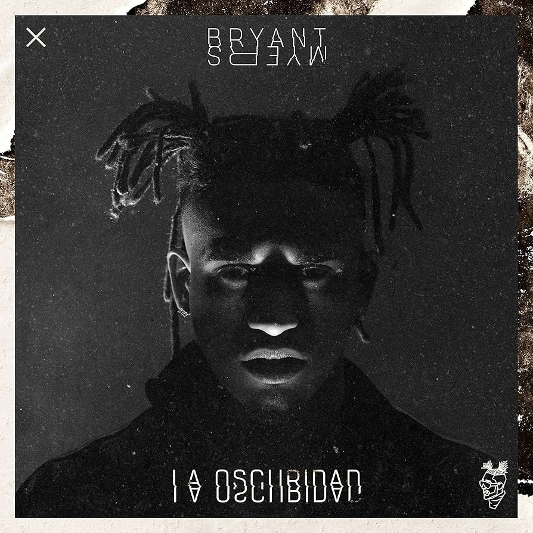
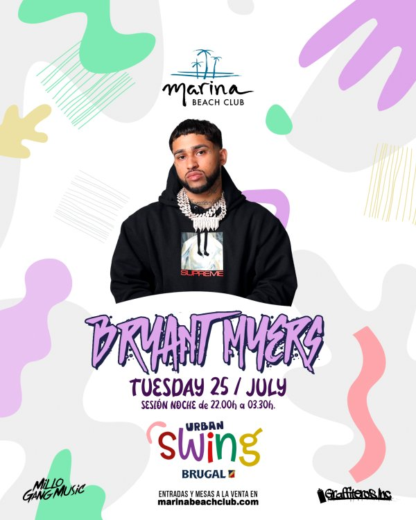
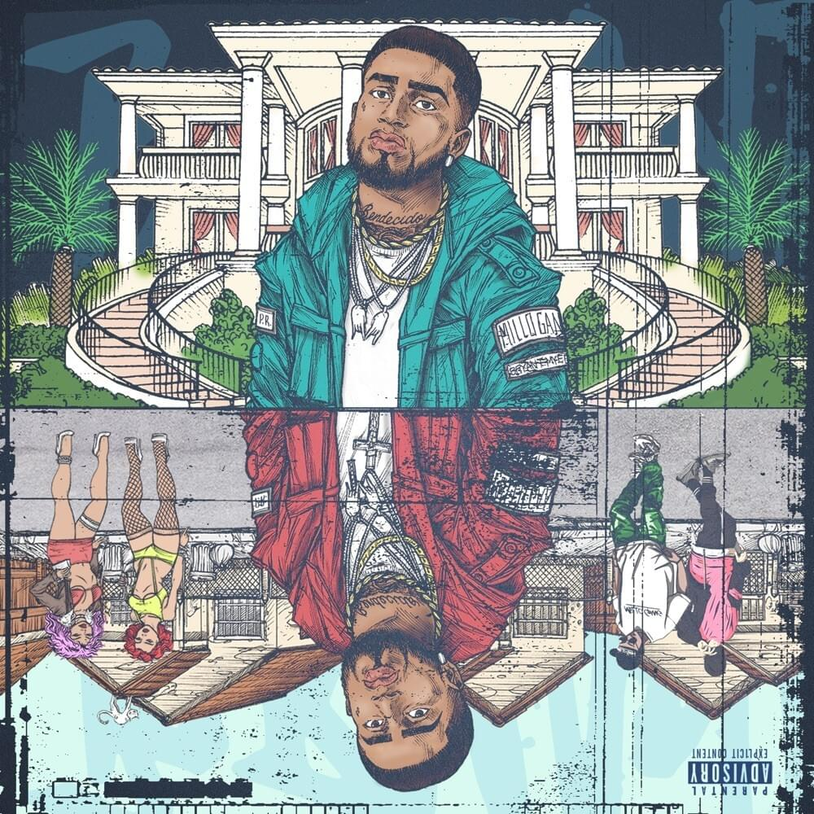

Bryant Myers

Año de inicio/finalización:
Comenzó a grabarse cantando sus propios freestyle en 2013 publicados en las redes sociales a través de sus cuentas de SoundCloud
Canción Más Popular:
Esclava remix
10 canciones más escuchadas:
Álbum más escuchado/Vendido:
La Oscuridad es el primer álbum de estudio del cantante puertorriqueño Bryant Myers, fue publicado el 27 de julio de 2018. Este álbum destacó por su mezcla de trap y reguetón, atrayendo a una amplia audiencia internacional.
Primer Concierto:
Su primer concierto fue un tour que hizo llamado LA OSCURIDAD EURO TOUR en 2018. Este tour lo llevó por varias ciudades de Europa, donde Bryant Myers cautivó a sus fans con su energía y estilo único.
Último concierto:
Su último concierto fue en 2023 en Shoko, una discoteca de Madrid, fue estilo Urbana/Reggaetón/Trap. En este concierto, Bryant Myers sorprendió a sus seguidores con un setlist lleno de sus éxitos más recientes y colaboraciones populares.
Primera Canción:
Fue su primera canción que después sacó el remix de esta canción que es "Esclava". Esta canción marcó el inicio de la carrera musical de Bryant Myers y estableció su estilo distintivo dentro del género del trap latino.
Última canción:
Su última canción oficial fue "Chi-Partner" que salió en marzo de 2024. Esta canción fue bien recibida por sus fans y mostró la evolución en el sonido de Bryant Myers, incorporando influencias del drill y manteniendo su característico flow.
Primer álbum:
La Oscuridad es el primer álbum de estudio del cantante puertorriqueño. Contiene catorce canciones y las colaboraciones de Plan B, Cosculluela, Bad Bunny, entre otros. Este álbum fue un éxito instantáneo y solidificó a Bryant Myers como una figura prominente en la escena urbana.
Último álbum:
Bendecido es el segundo álbum de estudio del cantante puertorriqueño Bryant Myers. Fue publicado el 30 de octubre de 2020 con la colaboración de El Alfa, Farruko, Nicky Jam, Zion & Lennox. Este álbum mostró la madurez artística de Bryant Myers y recibió elogios tanto de crítica como de público.
Biografía:
Bryan Robert Rohena Pérez, conocido artísticamente como Bryant Myers, es un cantante y compositor puertorriqueño de trap, drill y reguetón. Nació y creció en el barrio Loma Alta de Carolina, Puerto Rico, en lo que describe como un entorno peligroso: en los callejones y calles.